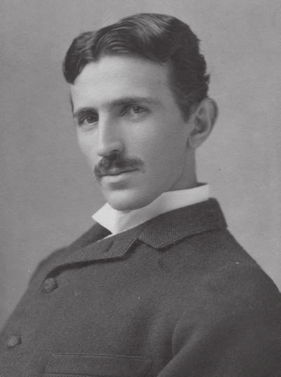

História - O Nascimento das Ondas de Rádio

Nikola Tesla (1856 - 1943)
As ondas de rádio são um tipo de onda eletromagnética, caracterizando-se como uma perturbação que se
propaga pelo espaço, transportando energia sem a necessidade de um meio material. Elas possuem
frequências que variam entre 3 kHz (quilohertz) e 300 GHz (gigahertz), podendo ter comprimentos de
onda que as categorizam em ondas de baixa e alta frequência. As ondas de rádio se propagam no vácuo
à velocidade da luz, desempenhando um papel crucial na comunicação global.
Principais Invenções
Rádio
A invenção do rádio é creditada a Guglielmo Marconi, que, em 1899, realizou a primeira transmissão
sem fio no Canal da Mancha. Marconi combinou as tecnologias de telegrafia e transmissão de ondas
eletromagnéticas, inicialmente teorizadas por Heinrich Hertz, para criar um sistema revolucionário
de comunicação. Nikola Tesla também desempenhou um papel crucial nesse desenvolvimento.
Radar
Radar (acrônimo de RAdio Detection And Ranging) utiliza ondas de rádio para identificar a presença,
distância e velocidade de objetos. Desenvolvido durante a Segunda Guerra Mundial, o radar é
amplamente usado no controle de tráfego aéreo, meteorologia, monitoramento de velocidade e
exploração espacial.
Telefonia Móvel
A telefonia móvel teve início em 1973, com Martin Cooper realizando a primeira ligação via celular.
Desde então, evoluiu de redes analógicas (1G) para redes digitais (2G a 5G), conectando bilhões de
dispositivos globalmente e revolucionando a comunicação pessoal e corporativa.
GPS
O GPS (Sistema de Posicionamento Global) é uma tecnologia que usa satélites para determinar a
localização de um objeto ou pessoa com precisão. Desenvolvido por militares dos EUA, é amplamente
utilizado em transporte, pesquisa científica e aplicativos de navegação.
Transmissão de TV
A transmissão de TV começou com sinais analógicos na década de 1920 e evoluiu para o formato
digital. Esta inovação permitiu maior qualidade de imagem e som, além de mais canais e
interatividade, transformando o entretenimento e a comunicação em massa.
Radioastronomia
A radioastronomia estuda o universo detectando ondas de rádio emitidas por galáxias, estrelas e
outros corpos celestes. Desde sua origem nos anos 1930, tem contribuído significativamente para
descobertas científicas, como pulsars e quasares.
Ressonância Magnética Nuclear
A ressonância magnética nuclear (RMN) utiliza campos magnéticos e ondas de rádio para criar imagens
detalhadas do interior do corpo humano, sendo amplamente usada na medicina e na pesquisa científica.
É uma ferramenta poderosa para diagnósticos e estudos moleculares.